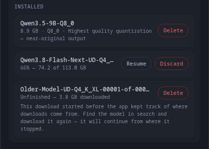
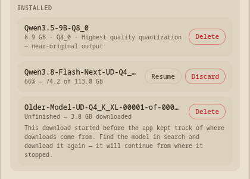
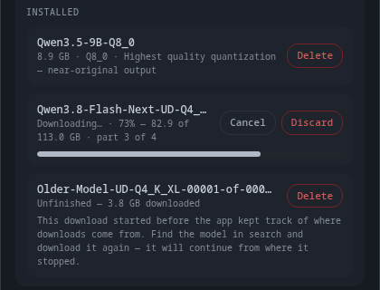
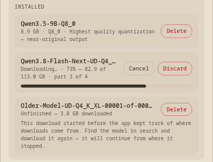
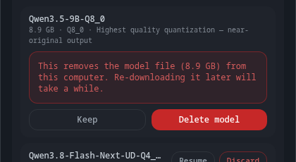
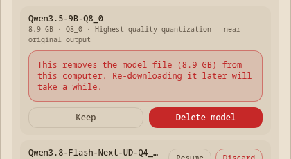
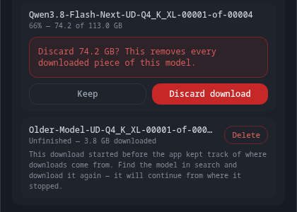
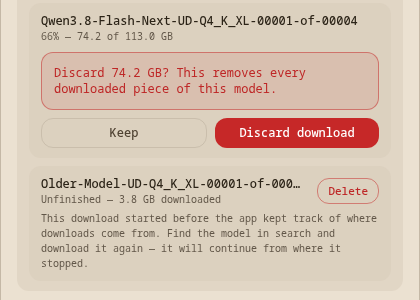

The half-finished download shows "66%" as text only — yet the same row grows a real progress bar the second you press Resume.
→ Draw the bar on the resting row too, filled to 66%, so a partial download is obvious without reading numbers.
Model names are cut off — "Qwen3.8-Flash-Next-UD-Q4_…" — and the clipped tail is exactly the part (-00001-of-00004) that says it is a split download.
→ Let the name wrap to a second line, or move the buttons below it, so the full name always shows.
The interrupted row is the only one that never says which quality version it is — the finished row above it says "Q8_0 · Highest quality quantization".
→ Add the quality name to the interrupted row's line: "66% — 74.2 of 113.0 GB · UD-Q4_K_XL".
The old untraceable download carries a permanent four-line paragraph, making the least useful row the tallest on screen.
→ Collapse it behind a small (i) on that row, so the explanation is one click away instead of always on.
"Unfinished" labels only the row you CAN'T resume; the row you CAN resume just shows a percentage.
→ Say "Unfinished" on both, and let the buttons carry the difference.


A download in flight offers Cancel and Discard side by side, and nothing on screen says Cancel keeps the bytes while Discard throws them away.
→ Show only Cancel while it's downloading; bring Discard back once it stops.
The stop button says "Cancel", but cancelling keeps every downloaded byte — it's closer to Pause.
→ Keep "Cancel" (it matches the download card above the list), or switch both to "Pause".


Two different words for removing things: unfinished downloads are "Discard", finished models are "Delete".
→ Use "Delete" everywhere, so there's one word for one idea.


The size shown is 74.2 GB, but the Hugging Face page for the same download says 79.7 GB — the app counts a GB the strict way and the website counts it the round way.
→ Leave the numbers as they are (they match everywhere else in the app) — this point is just so the mismatch doesn't surprise you later.
Interrupted downloads — 9 points before I build the backend — your answers
This is new UI running on fake data, so you can shape it before any of the machinery exists. Three kinds of row: a finished model, an interrupted download that can be resumed, and an old interrupted download the app can't trace. Answer Yes to change it, No to leave it as shown.
| Item | # | Point | Answer | Note |
|---|
Checked and left alone
- The confirmation wording — "Discard 74.2 GB? This removes every downloaded piece of this model." — names the real size and the real consequence, and the buttons read Keep / Discard download. No change proposed.
- The red used for Delete/Discard is the app's existing destructive colour, unchanged from the rows that were already here.
- All four screens captured cleanly in all six themes. Two unrelated shots in the same sweep (right-click menus on a code block and a file pill) failed to open — I confirmed by re-testing with my changes removed that they already fail on master, so they are not from this work.
What happens next
Nothing below the surface is built yet. Once you answer these, I change the wording and layout to match, re-shoot the same four screens, and only then build the machinery: the record written beside each download, the honest list, and the Resume button actually resuming.